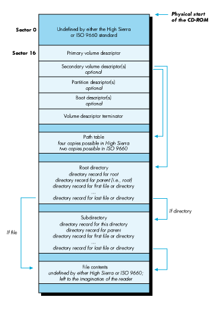

Any CD-ROM can be read at the bit level by any CD-ROM player, thanks to the
existence of standards for the physical format of such discs. Having this physical
format in common is nice, but it's not enough. We also need to be able to find specific
files on a CD, no matter which operating system we are using; we need a standard file
system format. High Sierra and its international equivalent ISO 9660 are standards
that define a file system usable under a variety of operating systems. This article
explores these standards and their implementation on the Macintosh, and discusses a
simple program you'll find on the accompanying Developer Essentials disc to convert
Macintosh files to ISO 9660 format.
A file system organizes data logically on a CD. Different operating systems use
different file systems to organize data, and thus a CD formatted with a native file
system can only be read by one particular operating system. To overcome this obvious
limit to the usefulness of CD-ROM as a storage and distribution medium, the industry
has established standards for a file system that can be used under a variety of
operating systems. The ISO 9660 standard and its predecessor High Sierra define a file
system carefully attuned to CD-ROM characteristics.
In particular, because CDs have a relatively slow seek time and a high capacity, these
standards make trade-offs that reduce the number of seeks needed to read a file, at the
expense of space efficiency. And because CDs are read-only, concerns like space
allocation, file deletion, and the like are not addressed in the standards. The standards
apply only to the data track of a CD-ROM, not to audio tracks; and they do not apply to
any media other than CD-ROM, such as erasable-optical drives. The standards do not
favor any particular computer architecture. All significant multibyte numbers are
recorded twice, once with the most significant byte first (msb order, used by Intel
processors such as those in MS-DOS compatible computers) and once with the least
significant byte first (lsb order, used by Motorola microprocessors such as those in
the Macintosh). This enables easy implementation under a variety of operating
systems, such as the Macintosh operating system, Apple II ProDOS 16 or GS/OS,
MS-DOS, VMS, and the UNIX operating system. Let's look now at how the two standards
developed.
A group of industry representatives met at Del Webb's High Sierra Hotel and Casino at
Lake Tahoe, Nevada, in late 1985 to see if companies could cooperate in developing a
common file system format for CD-ROM. The result of this series of meetings was the
High Sierra format. This format is fully specified by the May 28, 1986 Working
Paper for Information Processing--Volume and File Structure of Compact Read-Only
Optical Discs for Information Interchange. For obvious reasons, this is known as the
High Sierra paper.
The world at large then wanted to adopt an equivalent standard. The International
Organization for Standardization pushed High Sierra through its standardization
process, resulting in the international standard known as ISO 9660. (The organization
is called the International Organization for Standardization, but the standard is ISO
9660 .) This standard is described in the paper ISO 9660--Volume and File Structure
of CD-ROM for Information Interchange , known in the CD-ROM trade as the ISO
standard.
Apple's Macintosh operating system and GS/OS, plus Microsoft's operating system
MS-DOS, support both the ISO 9660 standard and the older High Sierra format.
ISO 9660 is the wave of the future--many existing CD-ROMs use the High Sierra
format, but everyone is changing over to the ISO 9660 standard, and most if not all
future discs will be in ISO 9660 format rather than High Sierra format. In the
meantime, because "ISO 9660" doesn't roll off the tongue quite as nicely as "High
Sierra," many people in the industry say "High Sierra" when they really mean "ISO
9660" or "whatever that damn format is that my CD-ROM is supposed to be in." In
this article, I do not use the terms interchangeably, but explicitly state which format
I'm referring to. But for practical purposes, what I say about one format also applies
to the other, with the exceptions I note.
The Macintosh supports both ISO 9660 and High Sierra through the use of a feature in
the Macintosh file system called the external file system hook. This is a low-memory
global that contains a pointer to an external file system handler to which multiple
handlers are daisy-chained. To support ISO 9660 and High Sierra, Apple has written a
new set of routines, contained in a file called Foreign File Access. This file, combined
with the files High Sierra File Access and ISO 9660 File Access, provides complete
support for the standard formats.
Because the ISO 9660 and High Sierra formats are supported via Foreign File Access
instead of software that's part of a device driver, you can use any media to create a
standard-format volume. In actual use, ISO 9660 and High Sierra only make sense on a
CD-ROM; but you can create a test volume using any floppy or hard disk.
A LOOK AT THE FORMATSThe ISO 9660 standard and the older High Sierra format
define each CD-ROM as a volume. Volumes can contain standard file structures, coded
character set file structures for character encoding other than ASCII, or boot records.
Boot records can contain either data or program code that may be needed by systems or
applications. ISO 9660 and High Sierra specify
The discussion that follows is a reasonably technical description of the standards in
each of these areas; it is not the definitive description. For the one true, proper
definition of the standards, read the original specifications.
THE LOGICAL FORMAT
CD-ROMs are laid out in 2048-byte physical sectors. This physical layout is defined
in a standard published by Philips and Sony known as the Yellow Book, and is
independent of the type of volume formatting used. Under ISO 9660 and High Sierra,
the CD is also laid out in 2048-byte logical sectors. Both formats also have the concept
of a logical block, which is the smallest chunk of file data. A logical block can be 512,
1024, or 2048 bytes. In general, file access information is laid out in sector-sized
units, while actual file data is laid out in block-sized units. On most CDs, the block
size is the same as the sector size at 2048 bytes, so this distinction isn't important.
Figure 1 shows the layout of a volume in ISO 9660 or High Sierra format.

Figure 1 A Volume in ISO 9660 or High Sierra Format
THE VOLUME DESCRIPTORS
Information about the volume itself is contained in an array of 2048-byte entries,
beginning at logical sector 16 on the disc, as shown in Figure 1. These are the volume
descriptors. There are five types of volume descriptors: the primary volume
descriptor, the secondary volume descriptor, the boot descriptor, the partition
descriptor, and the volume descriptor terminator. Every volume descriptor is 2048
bytes long (one sector). The first descriptor in the array is always a primary volume
descriptor, and the last descriptor always a volume descriptor terminator. The other
three volume descriptor types are optional. The boot descriptor and the partition
descriptor aren't supported by the Macintosh, because the Macintosh boot code looks at
the beginning of the disk for boot tracks, not at sector 16.
Each volume has one and only one primary volume descriptor. This descriptor
consists of the volume name, some publishing information, and offsets to the path table
and root directory. The primary volume descriptor also contains a copy of the root
directory entry (to minimize the number of seeks necessary to find out information
about a disc). In the directory structure pointed to by the primary volume descriptor,
filenames can consist of the uppercase characters A through Z, the underscore, and the
digits 0 through 9. This is a subset of ISO 646, an international character
representation standard roughly equivalent to ASCII. You will see a sample primary
volume descriptor later in this article in the section entitled "A Simple Formatting
Program: ISO 9660 Floppy Builder."
A volume can have zero or more secondary volume descriptors . The purpose of the
secondary volume descriptor is to enable you to press a CD-ROM that can display the
directories in a nonroman character set, such as Japanese Kanji, Hebrew, or Arabic.
In the directory structure pointed to by the secondary volume descriptor, the
characters used to represent filenames are not restricted to ISO 646. This directory
structure is separate from but parallel to the directory structure pointed to by the
primary volume descriptor. The secondary volume descriptor contains the same
information as the primary volume descriptor--although in a different alphabet--in
all but two fields. ThevolumeFlag field is used to indicate whether a
non-ISO-standard alphabet is being used. TheescapeSequences field contains
characters that define which alphabet is being used.
The files ISO 9660 File Access and High Sierra File Access each contain a resource
used to determine if the Macintosh should use a secondary volume descriptor. The
NRVD resource contains a word for the volumeFlags field, followed by 32 bytes for
the escapeSequences field. If a secondary volume descriptor exists, and if the
volume flags and escape sequences match those in the NRVD resource, then the
secondary volume descriptor is used instead of the primary volume descriptor.
The boot descriptor was designed to allow the creator of a CD-ROM to include system
information for booting from that CD-ROM. This descriptor is not supported on the
Macintosh, since the Macintosh operating system looks for boot information at the
beginning of the disk, in the area undefined by ISO 9660 and High Sierra. The
partition descriptor is also unsupported on the Macintosh.
The volume descriptor terminator is a simple structure that serves to indicate the end
of the volume descriptor array. Each volume contains one, and only one, volume
descriptor terminator.
THE PATH TABLE
The path table describes the directory hierarchy in a compact form, containing
entries for each of the volume's directories. Its purpose is to minimize the number of
seeks necessary to get to a file's directory information. The Macintosh caches the path
table in memory, enabling access to any directory with only a single seek.
ISO 9660 allows up to two identical copies of the path table to be stored on the disc,
while High Sierra allows up to four copies. This is useful to operating systems that do
not cache the path table in memory. In this case, copies of the path table can be stored
at regular intervals on the disc--say a quarter of the way in and again three-quarters
of the way in--to decrease the seek time necessary for the optical read head to find one
of the copies.
The path table for a simple formatting program is shown later in this article.
DIRECTORIES
Directories are stored in a hierarchical tree. Each volume has a root directory, the
parent to all other directories on the volume. Subdirectories can be nested up to eight
levels deep (the root plus seven levels).
Directory records are the basic unit of information kept about each file. Each
directory record contains the offset from the beginning of the disc to the file itself, the
size of the file, date and time information for creation and modification, file attribute
flags, information useful for interleaved files, and the filename (preceded by a length
byte). There is also an optional extension field, used by the Macintosh and Apple II
operating systems to store additional information not defined by the High Sierra and
ISO 9660 formats but necessary to the operating system. A directory record for a
simple formatting program is shown later in this article.
Additional file information necessary for multiuser operating systems such as the
UNIX operating system or VMS is retained in a separate field known as the extended
attribute record. Extended attribute records are recognized by the Macintosh, but they
are ignored since they contain information that is irrelevant to it.
A file identifier consists of a filename, a period, a file extension, a semicolon, and a
file version number. File identifiers can use the uppercase English alphabet,
numbers, and the underscore character (_), and can be up to 31 characters long.
Either the filename or file extension can be missing, but not both; if the extension is
missing, the period must still precede the semicolon; and the version number must
exist. This means that valid file identifiers look like THIS_FILE.EXISTS;1 or
.ONLYEXTENSION;1 but that file identifiers like NO_PERIOD;1 or NO_VERSION are
invalid. Both standards define a level-1 conformance, designed for compatibility with
MS-DOS, that restricts filenames to eight characters, a period, three characters, a
semicolon, and a version number.
There are two types of files: regular files and associated files. A regular file without an
associated file is simply a stream of bytes, like the files used in an operating system
such as the UNIX ® operating system or MS-DOS. An associated file is a file with the
same name as a regular file, and with the associated file attribute bit set in the
directory record. This scheme accommodates the data and resource forks of a Macintosh
file, as we'll discuss later.
HOW THE FORMATS DIFFER
The differences between ISO 9660 and High Sierra are slight, and mostly of interest to
programmers. They are as follows:
The Macintosh uses a file system called the Hierarchical File System (HFS). As its
name implies, it is hierarchical in structure, like that specified by ISO 9660 and High
Sierra; it supports subdirectories, called folders, where files can be logically grouped
together. HFS corresponds reasonably well to the ISO 9660 and High Sierra formats,
with some limitations. Let's look at specific parts of the information required by the
Finder and see how the ISO 9660 and High Sierra support handles these issues. FILE
FORKSEvery file in HFS has two forks: a resource fork and a data fork. The resource
fork of an application file contains the resources used by the application (for example,
the bit image for an icon or the title and commands for a menu) plus the application
code. The data fork can contain anything an application wants to store there. Similarly,
a document file contains the document's resources in its resource fork and the
document's data in its data fork. In ISO 9660 and High Sierra format, the data fork of a
Macintosh file is stored as a regular file, and the resource fork is stored as an
associated file.
A Macintosh application's data fork may be empty. How this should be handled is not
stated clearly in either the ISO 9660 or the High Sierra specification; however, in
both cases, an associated file is defined to exist only in conjunction with a regular file
of the same name. If the regular file (corresponding to the data fork) is missing, the
Macintosh operating system handles the case correctly; however, MS-DOS won't show
the file, because the MS-DOS CD-ROM extensions ignore files with the associated bit
set. This is because all files in MS-DOS are regular files.
FILE IDENTIFIERS
Like ISO 9660 and High Sierra file identifiers, HFS filenames can have a maximum of
31 characters. HFS filenames differ from valid ISO 9660 and High Sierra file
identifiers in the following ways:
These differences mean that many HFS filenames are illegal in ISO 9660 or High
Sierra format. This may cause problems in an application that depends on hard-coded
filenames. For example, Hypercard requires that the home stack be named HOME, but
this is illegal in ISO 9660 and High Sierra. The legal ISO 9660 or High Sierra name is
HOME.;1, which won't be found by Hypercard. Some versions of Videoworks depend
upon sounds being in a file named Sounds. The only solution is to have the user copy
such files over to an HFS volume and rename them.
FILE TYPE AND CREATOR
To establish the proper interface with the Finder, when a Macintosh application
creates a file it sets the file's creator and file type. Normally it sets the creator to its
signature, which is a unique four- letter sequence by which the Finder can identify it,
such as MACA for MacWrite, XCEL for Excel, and FNDR for Finder. It sets the file type
to a four-character sequence that identifies files of that type, such as TEXT for plain
text or documents of unknown type, APPL for applications, and WORD for MacWrite
documents. When the user asks the Finder to open or print the file, the Finder starts
up the application whose signature is the file's creator and passes the file type to the
application, along with the filename and other identifying information. This
information about each file is not defined in either High Sierra or the ISO 9660
standard. To preserve this file-specific information, Apple has defined a legitimate
extension to ISO 9660 (which also applies to High Sierra), documented in CD-ROM
and the Macintosh Computer , included on theDeveloper Essentials disc. The extension
specifies how to use the optional SystemUse field present in each ISO 9660 directory
record to accommodate the file type and file creator.
If a CD-ROM has been pressed in ISO 9660 or High Sierra format without the Apple
extension, all files on the disc are considered to be of type TEXT and creator hscd. TEXT
is a generic type that can be read successfully by many Macintosh applications; hscd is
a creator registered with Developer Technical Support that does not correspond to any
application or utility. If the CD-ROM has been pressed with the Apple extension, then
files on the disc can have any arbitrary type and creator.
FINDER FLAGS
The Finder flags are defined in Technical Note #40, Finder Flags. Only the invisible
bit has an analogy in the ISO 9660 and High Sierra formats, but with the Apple
extension to ISO 9660, theSystemUse field in the directory record accommodates
Finder flags. If the CD-ROM has been pressed with the Apple extension, only bits 5
(always switch launch), 12 (system file), 13 (bundle bit), and 15 (locked) can be
used. All other bits are either ignored or set due to internal workings of the file
system translator. Flags indicating that a file is on the desktop or in the trash are not
supported; all files are assumed to be in their folders.
DESKTOP INFORMATION
The Finder also requires some information describing how files on the desktop are to
be viewed, the icon to display for a specific file, the position of folders and file icons
on the desktop, and the default scroll position when the user opens a folder. This
information is contained in the FInfo, FXInfo,DInfo, and DXInfo structures
documented on pages IV-104 through IV-106 of Inside Macintosh . File or folder
comments are kept in the Desktop file. None of this information can be specified when
pressing a CD-ROM in ISO 9660 or High Sierra format. Some of it is computed by the
ISO 9660 File Access or High Sierra File Access software, however.
Due to some deficiencies in the original design of the Finder, the correct icon cannot be
displayed for a file on an ISO 9660 or a High Sierra disc. This is because the Finder
does not actually ask for the icon of a file; rather, it assumes the existence of a
desktop database that contains these mappings, and makes a special call, giving only
the file creator and type. The software to provide this information was designed to be
very HFS-specific. Currently, even if the icon bitmap for a file on an ISO 9660 or a
High Sierra disc is defined in the Apple extension, it is not used by the Finder.
Consequently, all files on a High Sierra or an ISO 9660 disc display a generic icon. If
such a file is copied to a hard disk, the correct icon is then displayed on the desktop. If
the user double-clicks on a generic application icon, the application opens correctly.
If the user double-clicks on a generic document icon, and the associated application
exists only on CD-ROM and not in the current directory, the application will not be
found; if the application exists on an HFS volume (because the user has copied it
there), it will be found.
Under HFS, the Finder keeps track of the position of a file icon on the desktop or in a
folder by using a special field; under High Sierra and ISO 9660, an icon's position is
computed when the folder is opened, and cannot be changed. File and folder comments
are not supported under the ISO 9660 and High Sierra formats. The view is always
assumed to be View by Icon and the scroll position is always assumed to be at the top of
the folder; these items are hard-coded in the file system translators.
SUMMARY
As a developer, you don't have to worry about files on an ISO 9660 or a High Sierra
CD-ROM looking different to your application. You may have to worry about filenames,
if you have hard- coded a particular filename into your application (which is always a
bad idea anyway.) Except for the icons not showing up properly (a major exception),
your users don't really see a difference between ISO 9660, High Sierra, and
HFS-format CD-ROMs. Names are reported back to the Finder exactly as found on the
High Sierra or ISO 9660 volume; they are not altered in any way, except that they are
truncated at 3 1 characters if they started out longer.
Version 1 of ISO 9660 File Access and High Sierra File Access had a misfeature that
slowed down volume mounting times on CD-ROMs with a large number of files. Because
neither the ISO 9660 nor the High Sierra format contains a count of the total number
of files on a volume, the access software was iterating over the volume to find this
number to stuff into the volume control block. This could make a CD-ROM with
10,000 files on it take up to 20 minutes to mount.
It turns out that the volume control block field that was being set is used in only one
place in the Macintosh operating system: the file count of the GetInfo of the volume.
Version 2 of High Sierra File Access and ISO 9660 File Access fixes this problem by
setting the appropriate field in the volume control block to 0. A special hard-coded
comment has been added to the volume'sGetInfo box that says either "The number of
files shown is incorrect due to limitations of the High Sierra format" or "The number
of files shown is incorrect due to limitations of the ISO 9660 format."
CD-ROMs are actually pressed from an image of a disk. To press a CD-ROM in ISO
9660 or High Sierra format, you need some premastering software that creates a disk
in the appropriate format. You can either hire a CD-ROM pressing plant to convert
your files to the ISO 9660 format, or you can purchase a system to do it yourself, or
you can write your own ISO 9660 formatting software. If you want to write your own
software, you'll find a simple example program on the Developer Essentials disc to
get you started. The program is called ISO 9660 Floppy Builder and is written in
Think C. It builds disks conforming to the ISO 9660 standard.
ISO 9660 Floppy Builder has a number of features, listed below. The bracketed
number after each feature indicates the section in the formal ISO 9660 document
referred to earlier that describes this feature. You should read that section of the ISO
9660 document for more detail about each feature.
ISO 9660 Floppy Builder is a demonstration program; it doesn't do many of the
difficult parts of building a disk in ISO 9660 format. Specifically, it doesn't support:
subdirectories (folders), keeping the files in a directory in alphabetical order, a main
directory whose total size exceeds one block of 2048 bytes, a block size other than
2048 bytes, secondary volume descriptors (used to implement non-ASCII alphabets),
or more than one logical sector of directory records.
TO USE THE PROGRAM
To use the program, start with a formatted blank floppy. We will unmount and format
the disk as part of the process of making it into an ISO 9660 format disk. All data will
be lost from the floppy inserted.
Select "Specify Files for Root..." to put files into the root directory. You'll be asked for
the names of the files to be copied over via a standard file dialog. When you've finished
selecting filenames, click the Cancel button.
A CLOSER LOOK AT THE CODE
Let's look at the C structures we'll use to implement ISO 9660. We need three basic
data structures: the primary volume descriptor, the path table, and the directory
record. A primary volume descriptor has the basic data for the entire volume. It looks
like this in C:
typedef unsigned char Byte;
typedef unsigned short Word;
typedef unsigned long Long;
typedef struct
{
Byte VDType; /* Must be 1 for primary volume
descriptor. */
char VSStdId[5]; /* Must be “CD001”. */
Byte VSStdVersion; /* Must be 1. */
Byte volumeFlags; /* 0 in primary volume
descriptor. */
char systemIdentifier[32]; /* What system this CD-ROM is
meant for. */
char volumeIdentifier[32]; /* The volume name. */
char Reserved2[8]; /* Must be 0's. */
Long lsbVolumeSpaceSize; /* Volume size, least-significant
-byte order. */
Long msbVolumeSpaceSize; /* Volume size, most-significant
-byte order. */
char escapeSequences[32]; /* 0's in primary volume
descriptor */
Word lsbVolumeSetSize; /* Number of volumes in volume
set (must be 1). */
Word msbVolumeSetSize;
Word lsbVolumeSetSequenceNumber;/* Which volume in volume set
(not used). */
Word msbVolumeSetSequenceNumber;
Word lsbLogicalBlockSize; /* We'll assume 2048 for block
size. */
Word msbLogicalBlockSize;
Long lsbPathTableSize; /* How many bytes in path
table. */
Long msbPathTableSize;
Long lsbPathTable1; /* Mandatory occurrence. */
Long lsbPathTable2; /* Optional occurrence. */
Long msbPathTable1; /* Mandatory occurrence. */
Long msbPathTable2; /* Optional occurrence. */
char rootDirectoryRecord[34]; /* Duplicate root
directory entry. */
char volumeSetIdentifier[128]; /* Various copyright and
control fields follow. */
char publisherIdentifier[128];
char dataPreparerIdentifier[128];
char applicationIdentifier[128];
char copyrightFileIdentifier[37];
char abstractFileIdentifier[37];
char bibliographicFileIdentifier[37];
char volumeCreation[17];
char volumeModification[17];
char volumeExpiration[17];
char volumeEffective[17];
char FileStructureStandardVersion;
char Reserved4; /* Must be 0. */
char ApplicationUse[512];
char FutureStandardization[653];
} PVD, *PVDPtr;
The path table looks like this in C:
typedef char dirIDArray[8];
typedef struct
{
byte len_di; /* Length of directory identifier. */
byte XARlength; /* Extended attribute record length. */
Long dirLocation; /* First logical block where directory
is stored. */
Word parentDN; /* Parent directory number. */
dirIDArray dirID; /* Directory identifier: actual length
is */
/* len_di; there is an extra blank */
/* byte if len_di is odd. */
} PathTableRecord, *PathTableRecordPtr;
Notice that this strucure is difficult to describe in C, because C requires that arrays of
characters have a fixed size, and the character arrays in these records are variable in
size. The path table records are packed together, so you'll see some grungy code to
move a pointer along in the variable records of the path table.
The directory record looks like this in C:
typedef struct
{
char signature[2]; /* $41 $41 - ‘AA' famous value. */
byte extensionLength; /* $0E for this ID. */
byte systemUseID; /* 02 = HFS. */
byte fileType[4]; /* Such as ‘TEXT' or ‘STAK'. */
byte fileCreator[4]; /* Such as ‘hscd' or ‘WILD'. */
byte finderFlags[2];
} AppleExtension;
typedef struct
{
byte len_dr; /* Directory record length. */
byte XARlength; /* Extended attribute record length. */
Long lsbStart; /* First logical block where file
starts. */
Long msbStart;
Long lsbDataLength; /* Number of bytes in file. */
Long msbDataLength;
byte year; /* Since 1900. */
byte month;
byte day;
byte hour;
byte minute;
byte second;
byte gmtOffset; /* 15-minute offset from Universal
Time. */
byte fileFlags; /* Attributes of a file or directory. */
byte interleaveSize; /* Used for interleaved files. */
byte interleaveSkip; /* Used for interleaved files. */
Word lsbVolSetSeqNum; /* Which volume in volume set contains
this file. */
Word msbVolSetSeqNum;
byte len_fi; /* Length of file identifier that
follows. */
char fi[37]; /* File identifier: actual is len_fi. */
/* Contains extra blank byte if len_fi odd. */
AppleExtension apple; /* This actually fits immediately after
the fi[] */
/* field, or after its padding byte. */
} DirRcd, *DirRcdPtr;
Again, this structure is difficult to describe in C. The directory records are packed
into 2048-byte blocks. No directory record is allowed to span a block, so any extra
bytes at the end of a directory record block are ignored. We'll ignore such details in
this simple example.
Our basic flow of control is simple. The core of the program is in the file BuildISO.c.
(SeeCreateAVolume for the main core code.) When we get a floppy, we check to see if
it is formatted. If so, we ask the user if he or she wants to continue (to make sure we
don't accidentally destroy a useful floppy). We create a primary volume descriptor
(by callingCreatePVD) and fill in most of the fields with blanks. We create a simple
path table. Because we don't have any subdirectories, we can build an extremely
simple path table with only one entry (for the root). We make a copy of the path table
in both least-significant-byte and most-significant-byte order.
At this point, we loop, prompting the user for a filename. (See the routine
CreateFiles for details.) When the user selects a file, we get the Finder information
for that file (GetFileInfo) and check to see if the file has a resource fork. If the file
has a resource fork, we create an associated file directory record, and copy the
resource fork to the floppy. We always create a regular file, even if the file in
question has no data fork. (This is an arguable point. The Macintosh ISO 9660 support
works fine on files with only an associated file, but users of other operating systems
get bothered by the fact that files consisting of only an associated file don't show up in
their directory listings. Creating a regular file, even if the data fork is empty,
ensures that the same number of files shows up on the Macintosh and MS-DOS or
other operating systems.)
POSSIBLE IMPROVEMENTS
Improvements you can make to this sample program include the following:
drvName
If you've read to this point, you know more about ISO 9660 and High Sierra than you
ever thought your attention span could tolerate. You know where the formats came
from, how they're implemented on the Macintosh, what they specify, how Macintosh
files are stored in these formats, how to press a CD-ROM in one of these formats, and
even how to write a program to convert HFS files to one of these formats. The point of
all this is that ISO 9660 (and its older cousin High Sierra) gives you an operating
system independent platform for delivering information, thus opening up new markets
for your applications. If you are trying to penetrate multiple markets without using
ISO 9660, you are just pounding sand.
COMPANIES TO CONTACT FOR CD-ROM PRODUCTION
Here's a list of pressing plants that can convert your files to the ISO 9660 format:
3M Optical Recording
Building 223-5S-01
3M Center
St. Paul, MN 55144
612/736-3274
Mark Arps/Dick Tendill
AppleLink: D2462
DADC
1800 N. Fruitridge Ave.
Terre Haute, IN 47804
812/462-8100
Linda Watson/Kozo Arai
AppleLink: D2125
Disctronics
1120 Cosby Way
Anaheim, CA 92806
714/630-6700
Wan Seegmiller
Philips Dupont Optical
1409 Foulk Road
Suite 200
Wilmington, DE 19803
800/433-3475
Jill Jones
AppleLink: D2173
Nimbus Information Systems
SR 629, Guildford Farm
Ruckersville, VA 22968
800/782-0778
Larry Boden
Denon America
222 New Road
Parsippany, NJ 07054
201/575-2532
Nob Tokutake/Ben Garcia
If you want to buy your own premastering system, you can contact one of the following:
Meridian Data, Inc.
5615 Scotts Valley Drive
Scotts Valley, CA 95066
408/438-3100
Dean Quarnstrom
Optical Media Int'l.
485 Alberto Way
Los Gatos, CA 95032
408/395-4332
Applelink: D1490
BRIAN BECHTEL works in the Advanced Technology Group, where he applies to his
everyday life Wernher Von Braun's slogan, "Research is what I do when I don't know
what I'm doing." His title of Witzelsuchter is derived from an obscure medical
condition (usually caused by brain lesions) in which the patient takes an intense
interest in telling long, pointless stories and jokes. People who know him say this title
is appropriate. Brian claims the lesions resulted from nine months of studying the ISO
9660 and High Sierra standards documents. He also wrote the HyperCard CD Audio
Toolkit . He graduated from Occidental College with an A.B. in math. Meg, his daughter,
attends the Apple Child Care Center. His favorite food is chocolate, as is his favorite
color. He says he plays lousy acoustic guitar and roots for the LA Dodgers. His identical
twin, Bradley, manages technical support at some other Silicon Valley company. *
If you're really interested in the standards, you should get copies of the full
specifications. You can get the May 28, 1986, High Sierra specification from
National Institute of Standards and Technology
Administration 101
Library E-106
Gaithersburg, MD 20899
You can get the ISO 9660 specification from any of the following:
American National Standards Institute
1430 Broadway
New York, NY 10018Sales Department: 212/642-4900
ECMA Headquarters
Rue du Rhone 114
CH-1204
Geneva, Switzerland
Global Engineering Documents
800/854-7175 or 714/261-1455
For the five people out there who really care: Apple's High Sierra and ISO access
software supports level-2 interchange, according to section 10.2 of the ISO 9660
specification. This means it supports interleaved files, but not multivolume sets.*
Thanks to Our Technical Reviewers: Bill Galcher, Matt Gulick, Andy Poggio,
Llew Roberts, Keith Rollin, Helen Wang